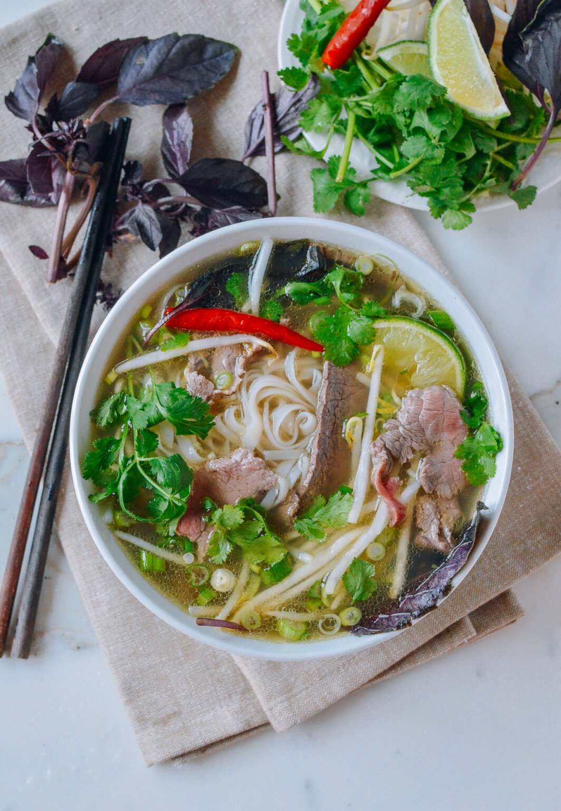

Phở Recipe
Home

Description
Vietnam’s most famous noodle soup, featuring a fragrant broth made from
slow-simmered beef or chicken bones, star anise, cinnamon, and other
spices, served with rice noodles and thinly sliced meat.
Ingredients
- Beef / Chicken (either one)
- Rice Noodles
- Beef/Chicken bones
- Star Anise
- Cinnamon
- Cloves
- Onions
- Ginger
- Fish Sauce
- Sugar
- Bean Sprouts
- Basil
- Lime
Steps
- Roast onion and ginger, then simmer with beef/chicken bones, star anise, and cinnamon for 4 hours.
- Strain broth, season with fish sauce and sugar.
- Cook rice noodles separately and slice meat thinly.
- Place noodles and raw beef or cooked chicken in a bowl, then pour hot broth over.
- Serve with basil, bean sprouts, lime, and chili.